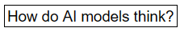
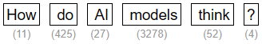
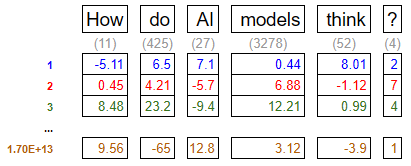
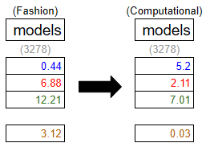
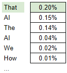
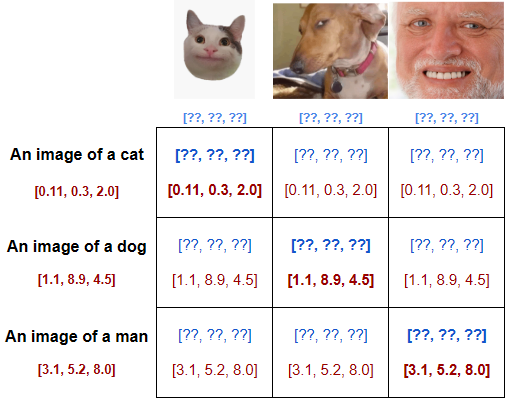
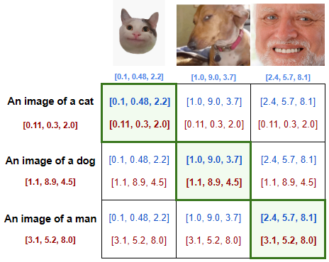

Ryan Van Cleave - April 2026
Artificial intelligence has rapidly moved from a niche technological concept to a dominant force shaping modern life. Headlines alternately promise revolutionary breakthroughs or warn of existential threats, often portraying AI as something mysterious, autonomous, or even sentient. This framing obscures a more grounded reality, where limitations and risks are often overshadowed by the promise of capability. To navigate the growing presence of AI responsibly, we must demystify the technology, understand its risks, and make intentional choices about the role we allow it to play in our lives.
At their core, AI systems are mathematical processes, not thinking entities. They don’t possess awareness, intent, or understanding, and they can only generate outputs derived from patterns already present in their training data. What appears to be creativity or reasoning is, in reality, the recombination of existing information according to statistical likelihoods.
This becomes clear when examining the different types of AI systems in use today. Let’s take a look at how a few of the most popular AI models operate.
To navigate its growing presence responsibly, we must demystify the technology, understand its risks, and make intentional choices about how we use it.
This document is divied up into collapsible sections. Feel free to skim, or click into a section for a deeper dive.
These AI are focused on generating plausible text. Given a prompt, they are trained to find the next most likely word. By repeating this process iteratively, an LLM is able to piece together a full written response that sounds natural. Given that one word is generated at a time, the model does not know what the full response will be, and does not fact-check its statements. This leads to text that sounds confident, but isn’t necessarily correct - just likely to sound right based on the patterns in the training data.
Part of a real sentence is provided, with a word missing. The model is trained to make a guess at what the most likely word is, then shown the real answer, and the model is updated so it’s more likely to guess correctly in the future. This process is repeated billions of times across massive datasets.




This refinement process is repeated many times, gradually building a more contextually accurate representation of the input. GPT-4 is a 120 layer model, so this process is repeated 120 times. This number is relatively arbitrary - more layers improve the quality of the output, but with the payoff of a higher cost of compute.
While the results can feel conversational and coherent, the underlying mechanism is fundamentally a sophisticated form of pattern completion. In essence, LLMs are highly advanced word-guessing systems.
These AI specialize in generating images from text. They are trained to take a set of randomized pixels, and treat it as a very blurry image. The processes involved allow the model to ‘unblur’ the image in a way that matches the desired target from the prompt.
Two goals must be accomplished for an image generator to function. The model must learn to render images, and it must internalize the relationship between text and images in a way that allows it to generate a relevant image when prompted.
To begin training, a massive dataset of images with text descriptions is collected - this includes captions, tags, and metadata. For current models, this is essentially the entire content of the internet. (more on this later)
Goal 1 - Predict Images
Goal 2 - Encode Text-Image Relationships


With the combination of these goals accomplished, the model is able to infer what sort of image best matches the prompt being requested. It starts with random noise, and denoises the image in a way that matches the desired prompt.
Interestingly, generating an image is less computationally intensive than generating a text response, as the model does not need to iteratively add on one pixel at a time, in the way that it does with text.
These AI are focused on retrieval rather than synthesis.The underlying context data is similar to that of an LLM, but responses are provided as excerpts rather than a generated string of text. These systems are quietly doing some important work in document analysis, where they can flag or extract from massive datasets for audits.
Specialized, narrow tools designed to meet specific needs - often for research or processes that benefit from pattern recognition. Being proprietary systems, they’re often a blend of techniques from the other AI forms, with datasets and training that is specific to their domain. A medical diagnostic tool that requires accuracy has a very different set of needs from a general AI that isn’t held to a similar standard.
Importantly, these categories do not share identical processes, and progress in one area does not necessarily translate to another. The tendency to treat AI advancement as a single, unified trajectory often leads to exaggerated claims.
This distinction highlights an important limitation: AI does not understand information. It maps relationships within data. Its outputs are optimized for plausibility, not truth. As a result, these systems can produce responses that are fluent and confident but factually incorrect - a phenomenon often referred to as “hallucination.” They do not verify claims or distinguish between accurate and inaccurate information unless explicitly guided to do so through external tools or constraints. Additionally, their performance is highly sensitive to how prompts are phrased, meaning small changes in input can produce significantly different outputs.
Despite these limitations, AI systems offer meaningful strengths. They excel at recognizing patterns across large datasets, transforming information into different formats, and compressing complex knowledge into more accessible forms. However, these strengths must be weighed against their weaknesses, particularly when deployed at scale.
The risks associated with AI are difficult to quantify, in part due to limited transparency from the companies developing these systems. Clashing incentives further complicate the issue - some parties benefit from overstating AI’s capabilities while others overstate its environmental or social impacts. This uncertainty makes it challenging to form clear, evidence-based conclusions about its broader consequences.
Training large AI models requires significant computational resources, and running them at scale, known as inference, adds ongoing energy demands. The extent of this impact is difficult to measure accurately, as companies do not freely release this data. The best estimates come from concerted efforts to analyze and extrapolate data from smaller open-source models and hardware capabilities. Energy-per-prompt sounds like a straightforward metric for tracking the cost of inference, but it unfortunately breaks down quickly. Unknowable factors like the location of the data center processing the request, the time of day in that area, and number of concurrent requests from other users can cause the energy use to wildly fluctuate. Some prompts even require multiple subsequent prompts within the LLM to generate a response.
Here are some current estimates for energy consumption.
Note: It takes ~600 joules to run a microwave for 1 second.
If these estimates are accurate, the cost of inference is lower than one might expect for the amount of concern being raised around energy consumption. After all, the +30s button is likely the most used button on a microwave, and nobody gives it a second thought. As a consumer, your individual prompts are likely not the root of concern for energy use, however there are some caveats that validate these concerns.
While the individual footprint may be small, it is built on top of existing energy demands, and the scale of the implementation is substantial. Estimates vary widely, and the lack of standardized reporting makes it difficult for consumers or policymakers to make informed decisions. As a result, these technologies are being adopted and expanded without a reliable understanding of their true environmental cost.
AI-generated content is contributing to what some describe as a fragile information ecosystem. The rapid production of low-quality or misleading content (slop) blurs the line between authentic and generated material. This not only makes it harder to discern truth, but also creates feedback loops - where AI-generated content is used to train future models, potentially amplifying inaccuracies over time. These dynamics raise concerns about a “dead internet,” where human-generated content becomes increasingly diluted. Humans currently account for only 49% of internet traffic. With the rise of slop, consumers have a growing responsibility to regulate and validate their sources of truth.
In the classroom, AI tools present both opportunities and challenges. While they can support learning, over-reliance may hinder the development of critical thinking and problem-solving skills. An increasing readiness to offload cognitive work, and the ease of generating answers contributes to academic dishonesty, undermining the value of assessments and credentials. Advancement and deployment of the technology is outpacing educators’ ability to adapt their curriculum to it.
Creative professionals face additional pressures, as generative tools can replicate styles and produce content at scale, often trained on copyrighted works without consent, credit, or compensation. Models can be trained to produce art in specific personal styles, and often have the artist’s name attached, again without their consent. This isn't limited to established artists either. As Steven Zapata puts it in his TEDx Talk, “I get messages from [the students] every day… they worry that they’re going to teach an AI system their style before they’ve had a chance to do anything good with it in the first place.” This raises questions not only about the economic impact of but also about the erosion of creative confidence and identity. The optics of using AI generated content in professional settings are already trending negatively, but there is a cost with engaging and supporting such systems even for personal use. There may come a future where AI art is indistinguishable from human art, but it is not a future I’m personally striving for.
Given these realities, a more intentional approach to AI use is necessary. As society adapts to the growing presence of these tools, it is a responsibility of each of us as individuals to govern our relationships with them. Here are my recommendations:
Looking ahead, AI is unlikely to disappear, but its current trajectory is likely unsustainable. While larger models have driven recent advances, the benefits of increased scale are beginning to diminish relative to their cost. I believe we’ll see a shift toward smaller, more specialized models that can run locally - offering greater transparency, efficiency, and user control. These systems may achieve much of the same functionality while avoiding some of the drawbacks associated with massive centralized models.
The most significant long-term risks of AI may not come from dramatic, science-fiction scenarios, but from gradual shifts in how people interact with information and each other. Increased mistrust, cognitive dependence, and social fragmentation are more plausible outcomes than sudden technological takeover.
AI is not magic, nor is it sentient. It is a powerful tool, but only when used in ways that align with its strengths and limitations. By understanding how it works, acknowledging its risks, and making deliberate choices about its use, we can engage with AI in a way that preserves both its benefits and our own independence.
In the process of writing this paper, I made a significant algorithmic sacrifice. I consumed an unrecommended amount of information regarding AI technology, and it is now salient in my content feeds. Some of it was fantastic, and a lot of it was not. Here are some sources that I think are worth checking out.
Large Language Models Explained Briefly by 3Blue1Brown
How LLMs Actually Generate Text by LearnThatStack
But how do AI images and videos actually work? by Welch Labs
The problem with AI-generated art | Steven Zapata | TEDxBerkeley by TEDx Talks
AI Slop Is Destroying The Internet by Kurzgesagt - In a Nutshell
Hugging Face is one of the organizations involved in developing open source models, and is in the process of developing standardized energy usage metrics. These currently apply to their open source models, but may one day be adopted for larger models.
Here is a conglomeration of many sources of data on AI energy consumption.